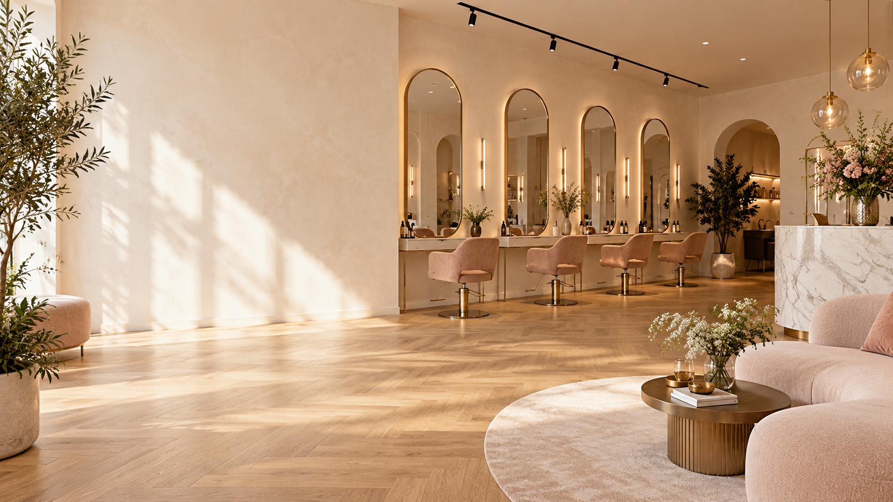
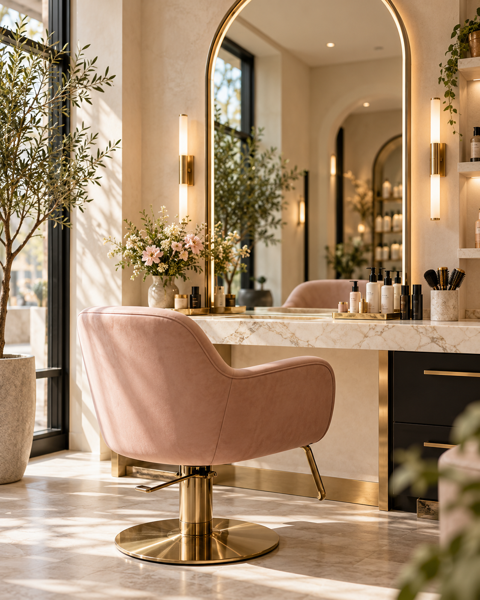
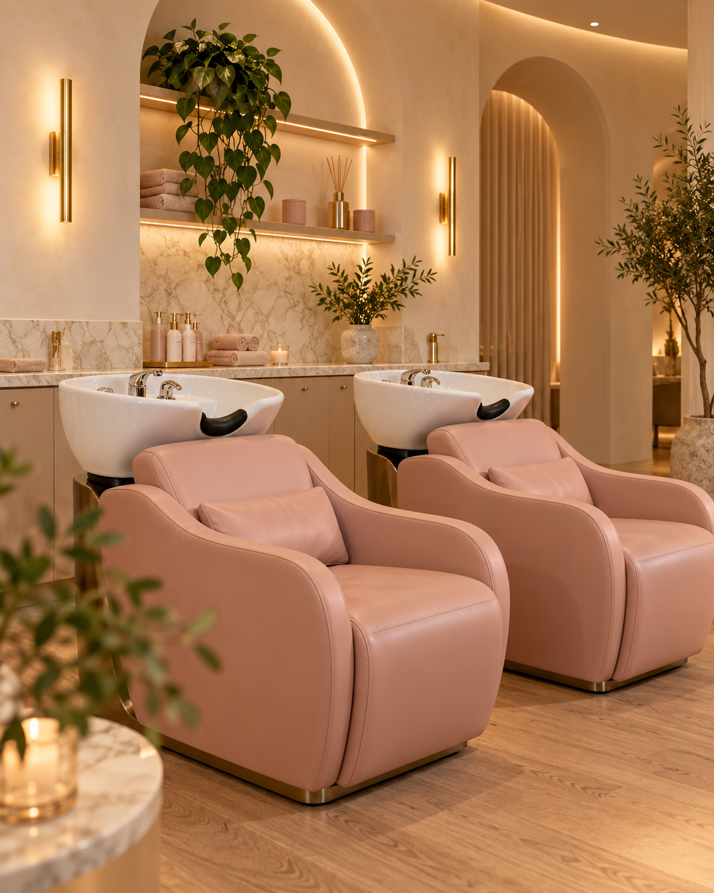

DE SALON
Een plek om
even los te laten.
Milou’s Hair Salon in Brielle is ontworpen als een warme, moderne en toegankelijke plek. De salon heeft vier kapplekken, twee wasbakken en ruimte om rustig te wachten.



“Niet alleen mooi haar, maar een fijne ervaring waarin jij je welkom, mooi en zelfverzekerd voelt.”
Reserveer jouw plekje →